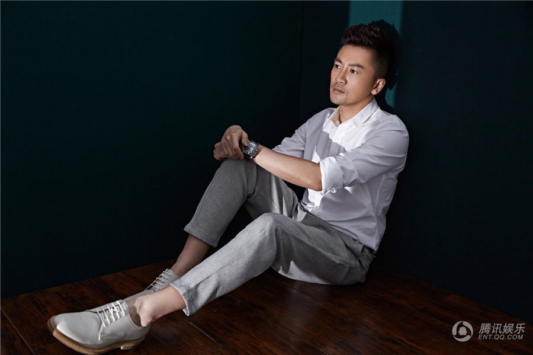
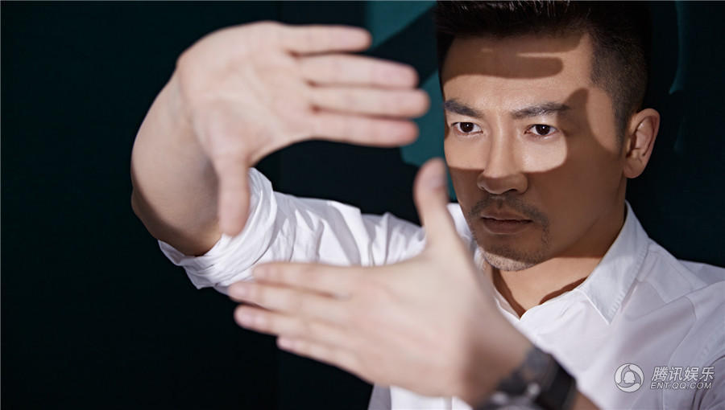

由新晋导演苏有朋指导的首部银幕处女作《左耳》，上映不到半月便席卷了超四亿的票房，可谓口碑和票房齐佳，引发无数热议。近日，导演苏有朋曝光了一组文艺范十足的写真。写真中的苏有朋，纯白平整的衬衣，尽显其低调又不失感性的状态。虽然身着的是设计简洁的外套，但随着变幻的光影，他灵动的眼神却很是吸引人。时而闭眼凝思，时而认真掌镜，这份低调背后的睿智跃然于静止的图像间。


苏有朋低调中尽显文艺范
| 2015年5月15日 |
来源：腾讯网 |